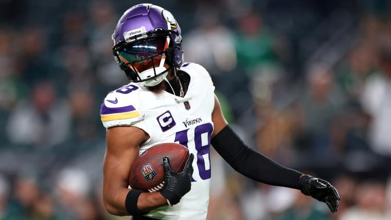

Welcome to the Justin Jefferson Site!
Justin Jefferson is turning out to be one of the NFL's best recievers and one of the greatest Vikings of all time. To honor his journey, this website aims to document his career, from high school all the way to his electric career in the NFL
Click one of the options above to take a dive into his journey as a football player.